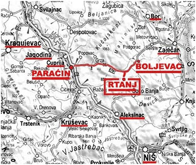
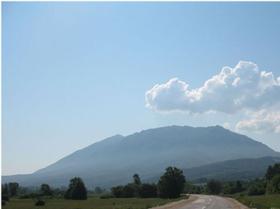

Rtanj
Planina Rtanj je pravo mesto za sve koji vole izazov. Ova planina je poznata po brojnim podzemnim izvorima, pećinama, jamama, lekovitom bilju, vatrenim loptama, koje predstavljaju prirodni fenomen i drugim kuriozitetnim i neobjašnjivim pojavama. Zbog toga privlači veliki broj avanturista za koje poseban izazov predstavlja uspon na vrh Rtnja sa koga seže pogled čak do ušća Save u Dunav.
"...Kada su lepi letnji dani, oko njega se igraju oblaci; perjasti beli oblaci, gonjeni u visanama vetrom, zakače se za Šiljak, obaviju ga, talasaju se i obilaze neko vreme oko njega, zatim se otkače i popnu u visinu... Kad se gusti oblaci počnu uzvlačiti uz strane Rtnja i penjati uz Šiljak, gotovo je pouzdan znak da će biti kiše; pre nego što ona pljusne, dune jak vetar, magle se počnu talasati i povijati po dolinama i izlaziti na niže vrhove. Nije redak slučaj da podgorinu Rtnja pokriju oblaci i pljusne kiša, a na Šiljku sunce greje i iznad njega je vedro" Ovo je jedna od odlika ove lepe planine u Istočnoj Srbiji" (Ratimir Stefanović - "Zapisi iz naših planina")

Naselje Rtanj je u okruženju listopadne i četinarske šume. Naselje se snabdeva čistom planinskom vodom. Bogatstvo prirode – samonikla jelova šuma na severnim obroncima Rtnja, raznovrsnost biljnog i životinjskog sveta, mnogobrojni prirodni izvori i vrela – podstiču razvoj ekološkog turizma. Severoistočni deo naselja okružuje park – šuma, jedinstvena u Evropi, sa oko 150 vrsta drveća i šiblja, na četrdesetak hektara.
Rtanj je naselje u opštini Boljevac u Zaječarskom okrugu. Monumentalno se izdiže iz Crnorečke doline i završava pravilnom piramidom na visini od 1566 metara. Prema popisu iz 2002. bilo je 182 stanovnika (prema popisu iz 1991. bilo je 200 stanovnika). Nalazi se na prosečnoj nadmorskoj visini od 600 m nadmorske visine. Položaj je 43 stepena i 46 sekundi Severna geografske širine i 21 stepen i 55 sekundi Južne geografske dužine.

Planina Rtanj